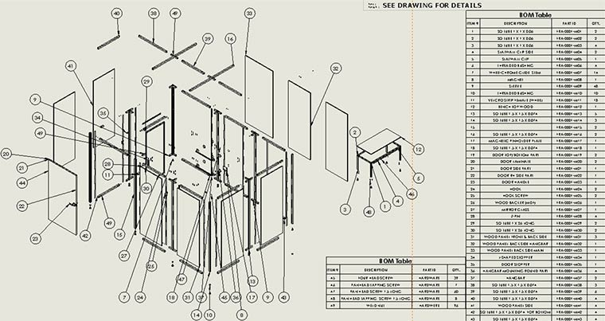

During my internship at Sauder Manufacturing Co., I supported the engineering team in improving how custom commercial furniture designs moved from concept to production. My work centered on reducing variation, improving manufacturability, and helping standardize processes in a high-mix, low-volume environment.
I collaborated with both design and manufacturing teams to revise drawings, optimize assemblies, and create tooling that improved consistency and ease of production. I also helped process engineering change orders, maintained part records, and supported the rollout of updates on the shop floor.
Throughout the internship, I gained valuable hands-on experience with how thoughtful design and clear documentation can simplify complex builds, reduce errors, and strengthen collaboration between engineering and production.
Top Skills Utilized: Design for Manufacturing, 3D Modeling & Drawing Revisions, Fixture & Tooling Support, ECO Processing, Cross-Team Communication, Custom Product Engineering